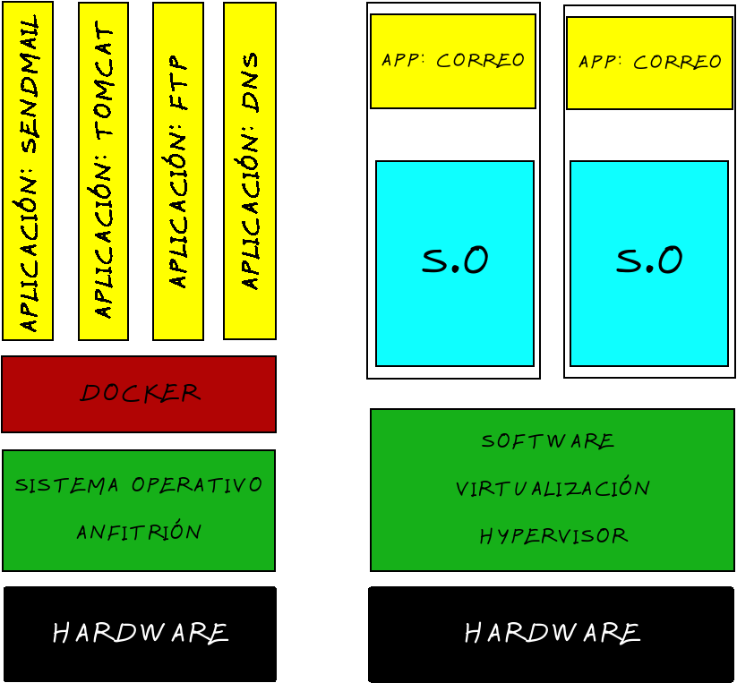

Docker es un subsistema de virtualización que comparte con el anfitrión el kernel y el sistema de archivos
El anfitrión siempre es Linux. En el caso de que estamos en Windows o Mac, será necesaria una maquina virtual como lo es VirtualBox o algo similar
Un software de máquinas virtuales necesita instalar un sistema operativo completo.Ejemplos de sistemas de virtualización:
Un software de contenedores es un sistema de virtualización que comparte el kernel con el anfitrión. Se basa en el concepto de microservicio, donde tengo todos los programas instalados, configurados y funcionando, gracias a los contenedores. Ejemplo de contenedores:
Para saber más sobre Docker:
